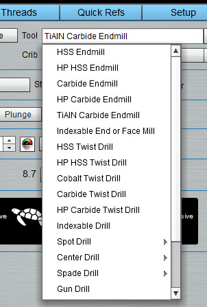
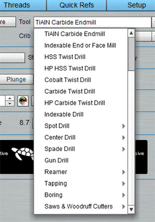

|
| |||||||||||
G-Wizard Calculator is
Traditional Feeds and Speeds involve too much guesswork
Trying to gauge by "feel"
Dealing constantly with new materials
So many different kinds of tooling
Micro-milling is a whole new ballgame
HSM is a game changer, but another new learning curve
Having to be right the first time on small runs and expensive parts
Is everyone in the shop doing feeds and speeds differently?
Calculating Feeds and Speeds can be time consuming
Calculations are complex: G-Wizard considers over 50 variables each time
Going through your Machinist's Handbook is no picnic
Every part needs feeds and speeds
Job Quotes need feeds and speeds
Fill in the fields, left to right, top to bottom to get your feeds and speeds.
G-Wizard will consider 50 variables to come up with its answer. It knows the capabilities of your machine, right down to the spindle power curve. It can adjust for the lack of rigidity on smaller machines. It's Material DB covers thousands of combinations across many families. It has a huge library of different tooling types that you can choose from.
After considering all that, you get reliable Feeds and Speeds tuned for your machine, material, tooling and cut conditions.
Remember thumbing through tooling catalogs and seeing all those little notes giving you nuggets of wisdom about what to do in various situations? Do you remember and use all that? Me neither, until G-Wizard!
We put a whole bunch of those tips and rules into G-Wizard. It knows the darnedest things, and it's always on the lookout for a chance to share them with you in the "Tips" section. For example, as CNC'ers we're used to pretty much always Climb Milling, but it isn't always the best thing to do. As your width of cut approaches the full diameter of the cutter, it turns out that Climb Milling forces the cutting geometry to turn more negative, which increases cutting forces and has various other effects that aren't helpful. So G-Wizard gives you a tip. For this cut you ought to use Conventional Milling.
Why remember all that when G-Wizard will do it for you?
Not all cuts are equal. Sometimes we want the ultimate Material Removal Rate to rough our way through buckets and buckets of chips. Sometimes we want the finest finishing pass we can get without making the tool rub, which shortens its tool life. What if we need something in between? Maybe we've got a new tool and we're not totally sure about it yet. Or, perhaps we're nearly done with a job that has a lot of hours invested in it. Making a mistake now would be very costly. Let's take it easy and be a little more conservative.
G-Wizard has got you covered for these situations with our exclusive Tortoise and Hare Slider. Dial in whatever level of Conservatism and Fine Finish you need versus Roughing and all out Hare-y (sorry!) chip throwing action.
Computer people like to say, "There's an app for that." Seems like CNC people ought to be saying, "There's a Tool for that," because we sure do use a lot of different tools. And every single one of them needs it's very own Feeds and Speeds. G-Wizard Calculator covers a great many tools and we're constantly adding new ones. Our tool menu is large enough you can't really take it in with a single screen shot:
 
And like that old TV ad used to say, "But wait, there's more!" Because using the Geometry menu you can access even more tool types:

You'll notice some specialized cutters for CNC Routers there. We have most comprehensive selection of cutters and geometries for milling machines, routers, and lathes of any feeds and speeds product--you will not be disappointed.
How do you decide your Cut Depths and Cut Widths? Rule of thumb? Trial and error?
If you think about it, these are pretty important numbers. They have a profound effect on your material removal rates, tool life, surface finish, and even the accuracy of your parts. This is one place where guesswork does not pay off.
G-Wizard Calculator offers the industry's first comprehensive tools for optimizing Cut Widths and Depths. In fact, we offer two different tools.
First up is our Cut Optimizer. The Cut Optimizer lets you hold one variable constant and it caculates the other. Suppose you'd like to do a pocket or profile in a single pass and you're wondering how much Cut Width (stepover) you can take? Cut Optimizer makes short work of that problem. Here it is in action:
By the way, that video was from our G-Wizard University series. GWU is a series of quick bite-sized videos to help you come up to speed on G-Wizard.
We've got an even more comprehensive tool for optimizing your cuts that we call the CADCAM Wizard. CC Wizard is based on the notion of minimizing the number of questions you have to answer in order to get a complete roughing and finishing recipe back for the particular feature you're trying to program in your CAM software. It "thinks" like the CAM software, so it can save you lots of trouble in your CAM programming. Here is a video showing CADCAM Wizards in action:
CADCAM Wizard is unique in the industry in that it provides truly optimal combinations of Cut Width, Cut Depth, Tool Selection, and Roughing Strategies to deliver the highest possible Material Removal Rates all within the capabilities of your machine and tooling.
To top it all off, it requires so little input that it makes it possible to set up a number of scenarios quickly and record the results.
There is so much more to see that we haven't shown you yet. Here are just a few highlights:
- You can define your own custom Tool Cribs with the tooling your shop uses
- You can input your manufacturer's recommendations for your cutters and inserts so G-Wizard can use those as a starting point.
- CADCAM Estimator works with CADCAM Wizard to make it easier for you to put together Job Cost Estimates for Quotes and other needs. It even gives you back Design For Manufacturing (DFM) tips to make your designs easier and cheaper to manufacture.
- There is a Cut Knowledge Base that collects information to help you get organized about optimizing your feeds and speeds still further to find the absolute edge of the envelope for your machines, tooling, and shop best practices.
- There are reference tools to help you with unit conversion, solving geometry problems, screw thread data, fastener dimensions, resistor color codes, and on, and on.
Why read the book when you can see the movie? Go ahead. Sign up for a free 30-day trial and see for yourself all the great things G-Wizard Calculator can do for you.